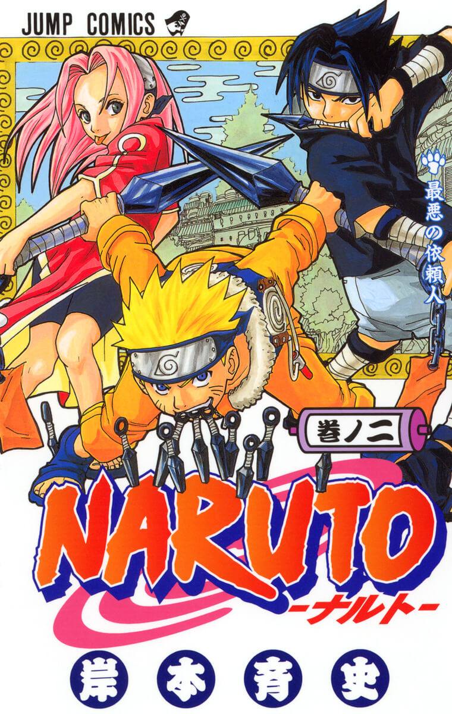

 |
Naruto
Naruto es un manga japonés creado por Masashi Kishimoto que comenzó su
publicación en 1999. Narra la historia de Naruto Uzumaki, un joven ninja que
sueña con convertirse en Hokage, el líder de su aldea, para obtener el respeto
de todos. A lo largo de la historia, enfrenta numerosos desafíos y desarrolla
habilidades únicas.
Este manga destaca por transmitir valores como la amistad, el esfuerzo y la
perseverancia. Su gran éxito lo convirtió en una de las series más populares
a nivel mundial, con adaptaciones al anime, películas y videojuegos.
|
 |
Dragon Ball
Dragon Ball es un manga creado por Akira Toriyama en 1984, considerado una de
las obras más influyentes en la historia del manga. La historia sigue a Goku, un
guerrero con habilidades extraordinarias que busca las esferas del dragón,
objetos mágicos capaces de conceder deseos.
A lo largo de la serie, se presentan intensas batallas y aventuras que han marcado
generaciones. Su impacto ha sido tan grande que ha dado lugar a múltiples
continuaciones, adaptaciones animadas y una enorme influencia en la cultura
popular mundial.
|
 |
One Piece
One Piece es un manga japonés creado por Eiichiro Oda que comenzó su publicación
en 1997. La historia sigue a Monkey D. Luffy, un joven pirata cuyo objetivo es
encontrar el legendario tesoro llamado “One Piece” y convertirse en el Rey de los
Piratas. A lo largo de su aventura, forma una tripulación y recorre distintos mares
enfrentando peligros y enemigos.
Este manga es reconocido por su extensa historia, desarrollo de personajes y valores
como la amistad, la lealtad y la perseverancia. Con el paso de los años, se ha
convertido en uno de los mangas más vendidos y populares de todos los tiempos.
|
 |
Attack on Titan
Attack on Titan es un manga creado por Hajime Isayama en 2009. La historia se
desarrolla en un mundo donde la humanidad vive protegida por enormes murallas debido a
la amenaza de los titanes, criaturas gigantes que devoran humanos. El protagonista,
Eren Yeager, se une al ejército con el objetivo de eliminar a los titanes y descubrir la
verdad detrás de su existencia.
Este manga destaca por su trama intensa, giros inesperados y su enfoque en temas como la
supervivencia, la libertad y el sacrificio. Su éxito internacional lo llevó a contar con
una adaptación al anime ampliamente reconocida.
|